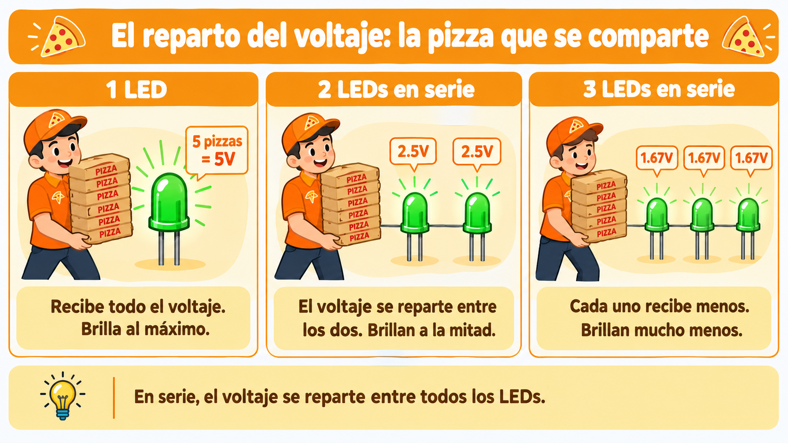
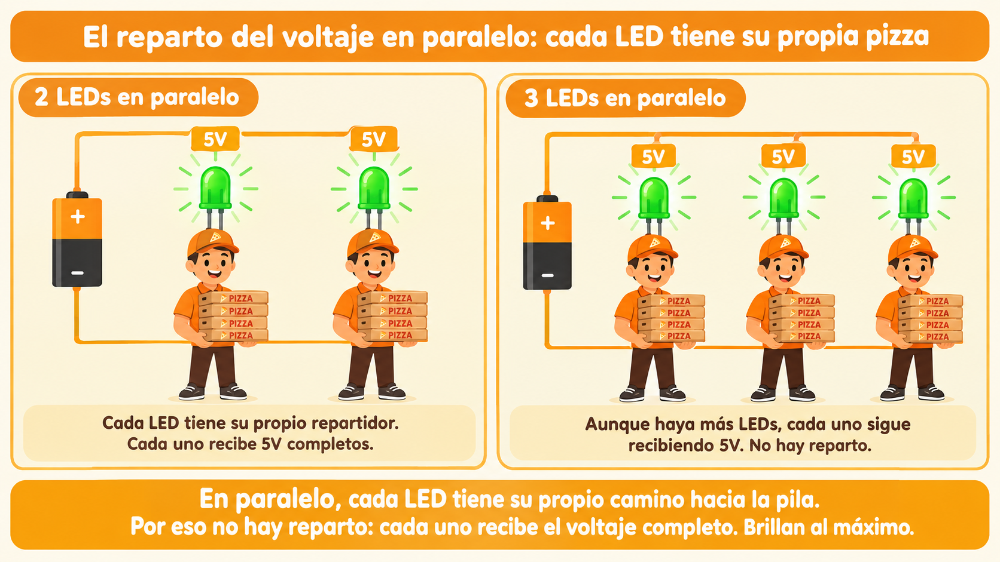
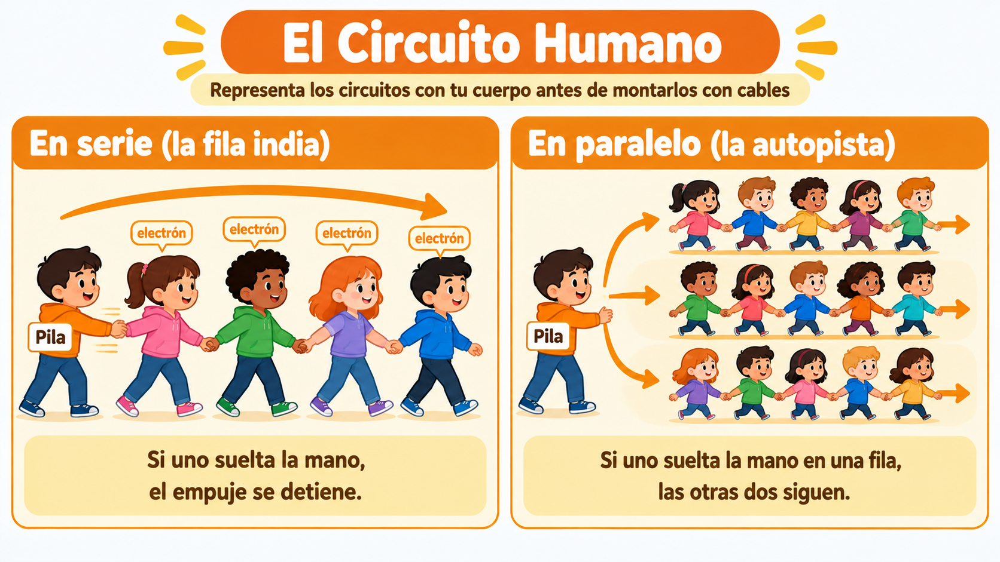
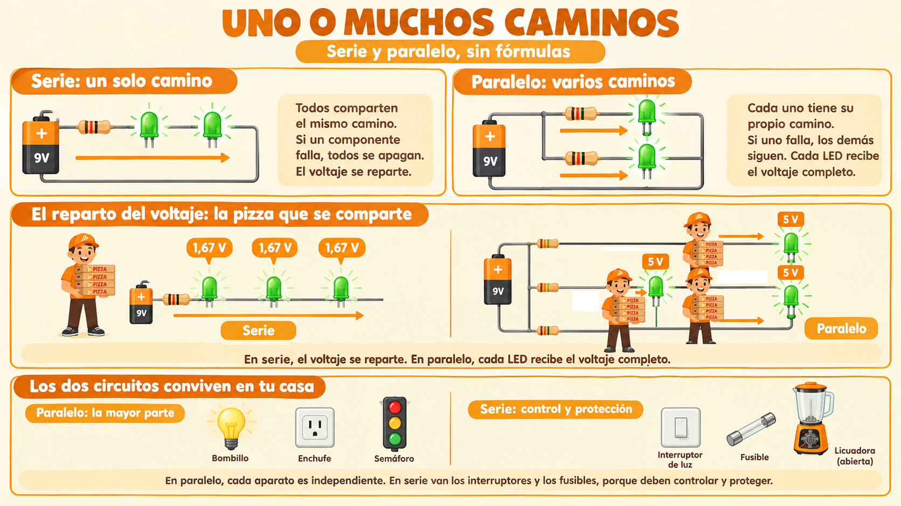

🟠 El camino único y los caminos múltiples
🚶 La fila india y la autopista
Imagina que vas al supermercado. Si hay una sola caja abierta, todos los clientes deben hacer una sola fila. Si uno se demora, todos esperan. Y si uno se va, la fila avanza.
Pero si hay tres cajas abiertas, los clientes se reparten. Cada uno elige su caja. Si una caja se cierra, las otras siguen funcionando. Nadie depende de nadie.
Con la corriente eléctrica pasa exactamente lo mismo. Hay circuitos donde todos los electrones pasan por un solo camino, y circuitos donde tienen varios caminos para elegir.
💡 Idea clave: en serie, todos comparten el mismo camino. En paralelo, cada uno tiene su propio camino.
🛤️ Serie: un solo camino
En un circuito en serie, todos los componentes están conectados uno tras otro, formando un único camino. La corriente sale de la fuente, pasa por el primer componente, luego por el segundo, y regresa. No hay forma de saltarse ninguno.

Piensa en lo que eso significa:
- Todos los electrones pasan por todos los componentes. Nadie se queda por fuera.
- Si un componente falla, el circuito se abre. Y todos los demás se apagan. Es como un puente levadizo que se levanta: nadie puede pasar.
- El voltaje se reparte. Si la fuente da 5 V y hay dos LEDs iguales, cada uno recibe aproximadamente 2,5 V.
🍕 ¿Cómo se reparte el voltaje?
Imagina que la pila es un repartidor de pizzas que sale con 5 pizzas (5 voltios). La manera en que entrega esas pizzas depende de cómo estén conectados los LEDs.
En serie, hay un solo repartidor y todos comparten:
- Si entrega a un solo LED, el LED recibe las 5 pizzas completas. ¡Brilla al máximo!
- Si entrega a dos LEDs en serie, tiene que repartir: cada uno recibe 2,5 pizzas. ¡Brillan a la mitad!
- Si entrega a tres LEDs en serie, reparte aún más: cada uno recibe 1,67 pizzas. ¡Brillan mucho menos!
En paralelo, cada LED tiene su propio repartidor:
- No hay reparto. Cada LED recibe sus 5 pizzas completas, porque cada uno tiene su propio camino hacia la pila. Por eso brillan al máximo, como si estuvieran solos.
En serie, el voltaje se reparte entre todos los componentes. En paralelo, en cambio, cada LED recibe el voltaje completo, porque cada uno tiene su propio camino hacia la fuente.

⚠️ Ojo con esto: en serie, cada LED recibe menos voltaje. Por eso brillan menos que si estuvieran solos. Es el precio de compartir el camino.
🛣️ Paralelo: varios caminos
En un circuito en paralelo, cada componente tiene su propio camino hacia la fuente. La corriente se divide en varias ramas, y cada rama funciona de forma independiente.

Piensa en lo que eso significa:
- Cada componente recibe el voltaje completo. Si la fuente da 5 V, cada LED recibe 5 V. Por eso brillan más.
- Si un componente falla, los demás siguen funcionando. Cada rama es independiente.
- La corriente se reparte. La fuente entrega más corriente en total, pero cada rama recibe solo la que necesita.
💡 Ventaja del paralelo: cada LED brilla al máximo y nadie depende de los demás. Por eso las instalaciones de las casas están en paralelo.

🏠 ¿Dónde ves el paralelo en tu vida diaria?
El paralelo no es algo abstracto: lo usas todos los días sin darte cuenta. Aquí van algunos ejemplos:
- Las luces de tu casa: cuando se funde una bombilla, las otras siguen encendidas.
- Los enchufes de tu casa: si desconectas el cargador del celular, la televisión sigue funcionando.
- Los semáforos de una intersección: si un semáforo falla, los otros siguen funcionando.
- Las luces del árbol de Navidad modernas: si una se quema, las demás siguen brillando.
🔀 Los dos circuitos conviven en tu casa
En tu casa no hay solo un tipo de circuito: conviven el serie y el paralelo, cada uno donde conviene.
En paralelo (la mayor parte):
- Las luces de la casa: cuando se funde un bombillo, los demás siguen encendidos.
- Los enchufes: si desconectas el cargador del celular, la televisión sigue funcionando.
En serie (los elementos de control y protección):
- El interruptor de la luz: está en serie con el bombillo de tu cuarto. Cuando lo apagas, abres el circuito y el bombillo deja de recibir corriente. Los demás bombillos de la casa siguen encendidos, porque están en paralelo entre sí.
- El fusible o taco: está en serie con el circuito que protege. Si pasa demasiada corriente, el fusible se quema y corta el paso para evitar un incendio.
- Dentro de la licuadora: el interruptor está en serie con el motor. Si no presionas el botón, el motor no funciona. Y si el motor se calienta demasiado, un fusible térmico (también en serie) corta la corriente para protegerlo.
Entonces, ¿por qué la instalación general está en paralelo? Porque así cada aparato es independiente: si se funde un bombillo, los demás siguen funcionando. Si todo estuviera en serie, apagar la luz de la cocina apagaría el refrigerador. Pero los interruptores y fusibles van en serie, porque deben controlar y proteger cada rama por separado.
🔬 Taller: Serie o paralelo, ¿cuál elige?
Vas a construir dos circuitos con los mismos componentes: uno en serie y otro en paralelo. Y vas a comparar cómo cambia el brillo de los LEDs.
💡 Dos formas de hacer este taller: puedes hacerlo en el aula (con el kit del colegio) o llevarlo a casa si tienes acceso a los materiales. Tu docente te dirá cuál elegir.
🎭 Antes de tocar cables: "El Circuito Humano"
Vamos a representar los dos circuitos con nuestros cuerpos. Esta actividad se hace en el patio o en un espacio amplio del salón.

En serie (la fila india):
- Formen una fila india, tomados de las manos.
- El primero de la fila es la "pila" y empuja suavemente al segundo.
- Cada estudiante pasa el empuje al siguiente.
- Observen: el empuje recorre toda la fila. Si alguien suelta la mano, el empuje se detiene. ¡Eso es un circuito en serie!
En paralelo (la autopista):
- Formen tres filas paralelas, cada una tomada de las manos.
- Todas las filas comienzan en la "pila" y terminan en el mismo punto.
- La "pila" empuja a las tres filas al mismo tiempo.
- Observen: si alguien suelta la mano en una fila, las otras dos siguen recibiendo el empuje. ¡Eso es un circuito en paralelo!
Pregunta para reflexionar: ¿En cuál de los dos circuitos es más grave que alguien se suelte? ¿Por qué?
🧰 Materiales
- Dos LEDs (preferiblemente del mismo color).
- Dos resistencias de 330 Ω.
- Una batería de 9 V o una fuente de 5 V.
- Cables caimán o cables de conexión.
- Tu cuaderno de bitácora.
🛠️ Procedimiento
- Monta el circuito en serie. Conecta los dos LEDs uno tras otro, y una sola resistencia. Observa el brillo.
- Dibuja lo que observas en tu bitácora: ¿los dos LEDs brillan igual? ¿Más o menos que si estuvieran solos?
- Monta el circuito en paralelo. Ahora cada LED tiene su propia resistencia y su propio camino. Observa el brillo.
- Dibuja lo que observas: ¿los LEDs brillan más que en serie?
- Retira un LED del circuito en serie y observa qué pasa con el otro. Luego hazlo en paralelo. Anota las diferencias.
- Responde en tu bitácora: ¿Cuál configuración prefieres y por qué?
📝 Mi nota sobre el taller
Cuando termines, escribe una nota breve al final de tu hoja de registro. No es una tarea, es una reflexión. Puedes escribir sobre:
- ¿Con quién hiciste el taller?
- ¿Qué configuración prefieres y por qué?
- ¿Qué te sorprendió más de comparar los dos circuitos?
- ¿Qué pasa cuando un componente falla en cada configuración?
❓ Pregunta guía
Si un LED se quema en un circuito en serie, ¿qué pasa con los demás? ¿Y si se quema en un circuito en paralelo? ¿Cuál configuración es más "segura"?
💡 ¿Sabías que…? Las luces de Navidad antiguas estaban conectadas en serie. Si una se quemaba, ¡todas se apagaban! Por eso encontrar la bombilla quemada era una pesadilla. Hoy las luces modernas están en paralelo, y por eso funcionan aunque una se queme.
⚠️ Seguridad: trabaja siempre con 3 V, 5 V o 9 V. Nunca uses voltajes de pared (110 V o 220 V). Siempre usa resistencias de protección con los LEDs.
📜 Las luces que se apagaban todas
Hace más de cien años, cuando la electricidad empezaba a llegar a las casas, alguien tuvo una idea muy bonita: iluminar un árbol de Navidad con pequeñas bombillas eléctricas.
Las primeras luces navideñas se conectaron en serie. Eran hermosas, pero tenían un problema: si una sola bombilla se quemaba, todas las demás se apagaban. Y encontrar la bombilla quemada entre ochenta era como buscar una aguja en un pajar.
Con el tiempo, alguien descubrió que si las conectaba en paralelo, cada bombilla podía funcionar por su cuenta. Si una se quemaba, las demás seguían brillando. ¡Y podías quitarla sin apagar todo el árbol!
Así nacieron las luces navideñas modernas. Y así se descubrió un principio que hoy usamos en todas las casas: es mejor tener varios caminos que uno solo.
La lección: cuando hay varios caminos, un fallo en uno no afecta a los demás. Por eso la instalación eléctrica de tu casa está en paralelo.
Fuentes: archivos históricos de la tradición navideña y biografías de Edward Johnson.🗺️ Repaso visual

Uno o muchos caminos
Dale play y en menos de 5 minutos descubrirás:
- 🚶 La fila india: qué pasa cuando todos deben pasar por el mismo camino.
- 🛣️ La autopista: qué pasa cuando hay varios caminos disponibles.
- 🍕 El reparto de las pizzas: por qué en serie los LEDs brillan menos.
- 🏠 El paralelo en tu casa: por qué un bombillo fundido no apaga los demás.
- 🎄 Las luces de Navidad: la historia de cómo pasamos de serie a paralelo.
💡 Escúchenlo en familia y comenten qué aparatos de la casa funcionan aunque uno se apague.